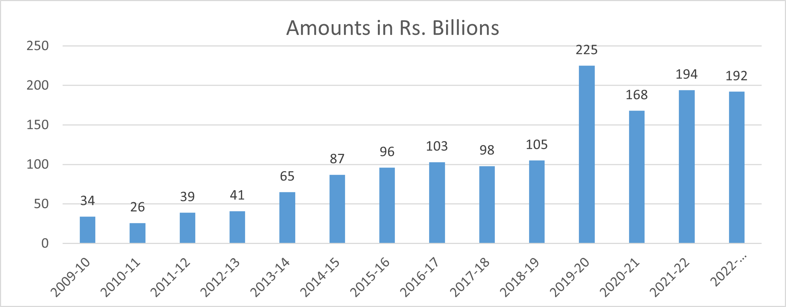
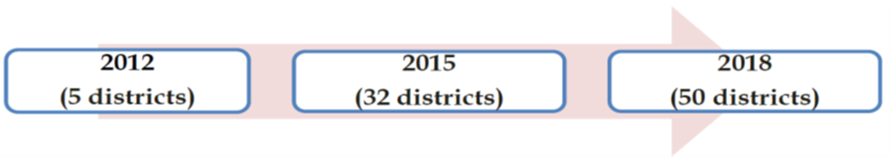
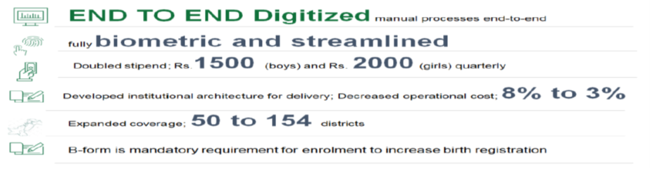
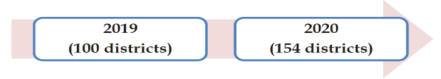
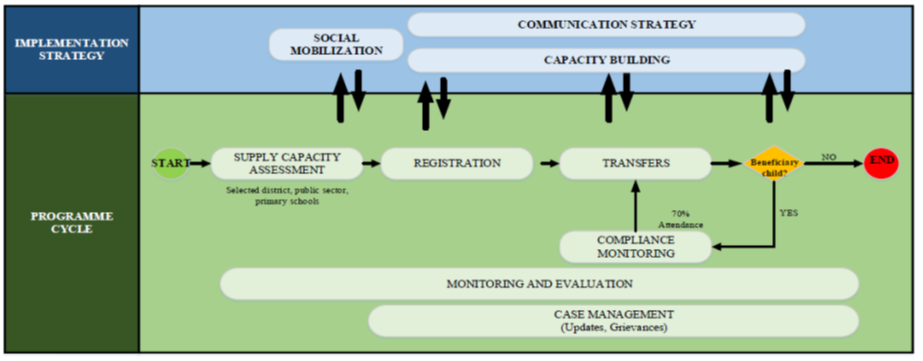
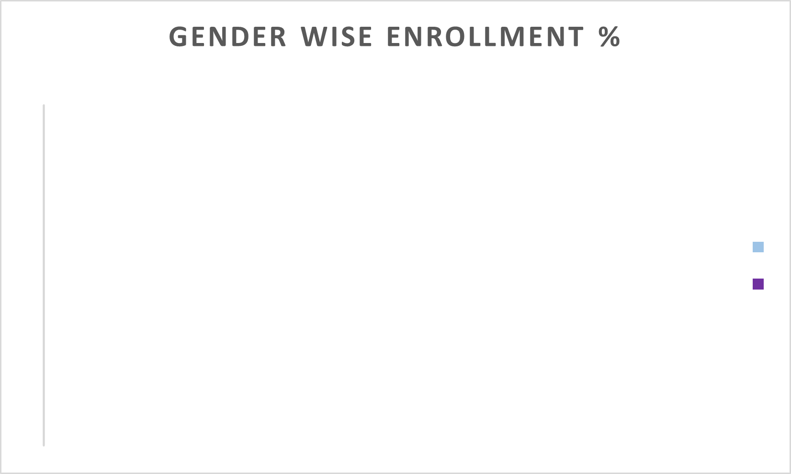
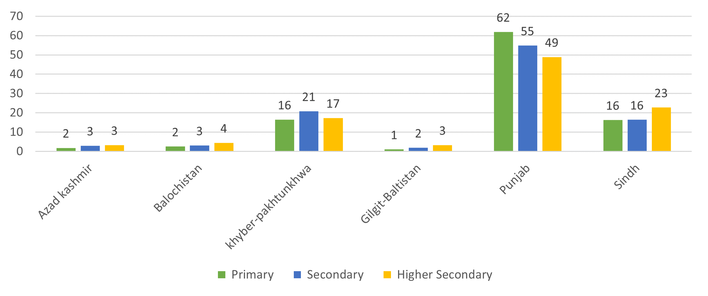
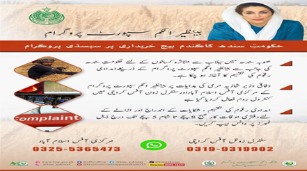

3 Main Programs of BISP
3.1 Unconditional Cash Transfers
From its inception in 2008 and to date, the unconditional cash transfers have been the main intervention of BISP. The short term objective of this programme was to cushion the negative effects of slow economic growth, food crisis and inflation on the poor, particularly women. Its long term objectives include meeting the targets set by Sustainable Development Goals (SDGs) to eradicate extreme and chronic poverty and empowerment of women.
The notion that making women the direct recipients of cash transfers will improve their influence in households’ resource allocation decisions and will empower them in general is at the heart of BISP. The notion that women should receive cash transfers derives from the original plan for the Prospera program in Mexico, which was designed under the working hypothesis that by providing women with more external income, they would have a larger share of overall household income, and therefore their agency within the household would increase (Schultz, 2004). From a theoretical perspective, the transfers represent a change in the share of income earned by each adult within the household, which lasts so long as the household receives transfers; the changes are not expected to last beyond the receipt of the transfers (WB reference).
Presently, beneficiaries of UCT/Kafaalat Programme are identified/ selected through scientific mode of National Socio Economic (NSER) survey based on Proxy Means Test (PMT) that determines the welfare status of the household on a scale between 0-100 (see chapter 4 for further details). The PMT cut-off score for eligibility is decided on the basis of available fiscal space. At present, PMT cut-off score of 32 is being used as eligibility cut-off to identify vulnerable families. However, for families with disabled persons, the PMT cut-off score is set at 37. The recipients of cash assistance can only be ever-married women of the eligible families, with valid CNICs. However, in result of recent change in policy, transgenders are also included under the programme without any restriction of PMT score.
Initially, the beneficiaries of the programme were provided cash assistance @ Rs 3,000/- per quarter per beneficiary. The quarterly cash grant has been gradually enhanced over-time from Rs. 3,000/- per beneficiary to Rs. 8,750/- per beneficiary. The summary of year-wise increase in quarterly cash assistance is given under in Table 3.1.
| Fiscal year | Quarterly tranche rate |
|---|---|
| 2008 - 09 | 3,000 |
| 2009 - 10 | 3,000 |
| 2010 - 11 | 3,000 |
| 2011 - 12 | 3,000 |
| 2012 - 13 | 3,000 |
| 2013 - 14 | 3,600 |
| 2014 - 15 | 4,500 |
| 2015 - 16 | 4,700 |
| 2016 - 17 | 4,834 |
| 2017 - 18 | 4,834 |
| 2018 - 19 | 5,000 |
| 2019 - 20 | 5000 - 6000 |
| 2020 - 21 | 6,000 |
| 2021 - 22 | 6000 - 7000 |
| 2022 - 23 | 7000 - 8750 |
BISP’s annual budget allocation for UCT/Kafaalat programme rose from Rs. 16 billion in FY 2008-09 to Rs. 275billion for FY 2022-23.During first three quarters of FY 2022-23, an amount of Rs. 164.8 billion has been disbursed under the programme.Year-wise summary of funds allocated/disbursed under UCT/Kafaalat programme is given as under:

3.1.1 Inclusion of Transgender in Kafaalat
Previously, only ever- married women were eligible to receive cash assistance under BISP Benazir Kafaalat Programme. BISP Board has recently approved the policy to include transgenders in Benazir Kafaalat programme. As per approved Policy, transgenders are required to obtain CNICs from NADRA wherein gender is mentioned as transgender. Survey is mandatory at Benazir Registration Centers established at BISP Tehsil Offices. However, PMT cut-off restrictions are relaxed i.e. all transgenders whose survey is conducted successfully, are eligible for inclusion in the programme. After validation/verification of data by NADRA, transgenders are declared as beneficiaries and they can start receiving cash assistance through BISP’s partner banks.
3.1.2 Exclusion Filter of Travel Abroad and Pensioner Policy
CT wing has moved a working paper for the approval of Board, through circulation, for removal of Travel Abroad profiling/exclusion filter. It is estimated that 194,000 beneficiaries blocked on this filter will resume receiving their payments. Similarly, under the Pensioner’s Policy, approved by BISP Board in its 57th meeting held on 1st December, 2022, around 55,000 beneficiaries blocked on account of being themselves or their spouses as pensioners will be unblocked. The data analysis has revealed that a substantial number of these blocked beneficiaries i.e. around 95,000 from Travel Abroad and 51,000 from Pensioner block, are already enrolled with partner banks and upon removal of these two filters they will be included in payment during next tranche (04th quarter of FY 2022-23).
3.2 Conditional Cash Transfers
Investing in human capital is one of the government’s core poverty reduction strategies as part of its global commitment to the Sustainable Development Goals (SDGs). International empirical evidence suggests that expenditure on primary education tends to be pro-poor as children number is generally larger in lower income households and they are more prone to chronic poverty shocks. Moreover, linking cash transfers with behavioral conditions can help in enabling poor households to attain the education and health facilities as well as breaking vicious cycle of poverty transmitted over generations. Such investment in human capital has also proven to bring about long term positive impacts on socio economic development of the country at macro level. In line with the objective of improving the human capital outcomes of children in poor and low-income households, BISP designed and launched the Waseela e Taleem conditional cash transfer (CCT) program, which was developed in consultation with all the programme stakeholders. This CCT program of BISP was initiated to financially support the primary education of 4 to 12 years old children of BISP beneficiary families for their enrolments and retention. The major objectives of WeT programme included:
To create long term sustainable awareness on the importance of primary education among BISP beneficiary families
Increase enrolment of children in schools for primary education
Improve school attendance by the children
Decrease school drop out rates
WeT Programme was launched in five pilot districts as part of initial test phase, in collaboration with education departments of provinces/regions in November, 2012. It was extended to 27 more districts in January, 2015 in all provinces/ regions of Pakistan. Under this program, each beneficiary child received a cash transfer of PKR 750 per quarter upon meeting the admission verification in 1st quarter and attendance requirement of 70% in subsequent quarters till completion of the primary education. It is part of the Graduation Strategy aiming to link the Unconditional Cash Transfer (UCT) to attainment of human development goals. Based on the field experience and lessons learnt from the implementation, the program expanded in different districts of the country in different phases, it was being implemented in 50 districts of the country till 2018.

The program underwent major reforms at policy, technical and operational level in recent past years. Following major reforms have been introduced in last three years:

Further, in 46th and 50th board meeting held on April 02, 2021 and June 28, 2021 respectively; the WeT program has been expanded for secondary and higher secondary children of BISP UCT beneficiary households and implementation in secondary and higher secondary was initiated from July 2021 all over Pakistan. Further, in 50th Board Meeting the brand name of the programme has been changed from Waseela-e-Taleem to Taleemi Wazaif. After the introduction of the major reforms indicated above, the programme is now being implemented in all districts of the country.

3.2.1 Programme Cycle
Benazir Taleemi Wazaif Programme cycle consists of eight major steps; from target identification to the stipend disbursement, each processing step is end-to-end digitized with multiple layers of verifications and cross-checks to ensure targeting accuracy, family-tree verification and admission/attendance compliance of beneficiaries.

3.2.1.1 Target / Screening
Like all the other social protection programmes of BISP, Benazir Taleemi Wazaif also draws its preliminary potential beneficiary data from the NSER dynamic registry for quarterly target setting. Analysis is carried-out on the NSER data which comprises socio-economic data of over 34 million households of the country. Filters based on specific criterions are applied on this data to identify potential Benazir Taleemi Wazaif beneficiaries across Pakistan. Multiple factors are considered during this screening process, such as total number of potential beneficiaries (in a particular district and tehsil), number of potential beneficiary children per household, availability of schools of in the region, availability of BISP human resource in the region and so forth.
3.2.1.2 Enrollment Target Allocation
Once the potential beneficiary target numbers are finalized; targets are assigned to respective field teams across Pakistan. Headquarter based Benazir Taleemi Wazaif Enrollment team load region wise enrollment targets into the enrollment application installed on the tablets through a secured web-based network. Target data contains names of BISP beneficiary, contact information, address etc. This data is primarily used by BISP field teams to contact the potential beneficiaries to sensitize them about the programme and for subsequently enrolling their children with the programme.
3.2.1.3 Mobilization
Following region wise target allocation, potential beneficiaries are mobilized (in field through BISP tehsil office field staff) by carrying out awareness campaigns in communities across Pakistan. During these campaigns beneficiaries are informed about the objectives and prerequisites of the programme. Mobilization activities are held, time and again to ensure maximum dissemination of information in the target area. As part of the mobilization campaign officials and teachers of provincial and district education department are also provided awareness sessions. Guidelines to teachers are shared regarding coordination mechanism and record keeping/sharing of Benazir Taleemi Wazaif enrolled students with Compliance Monitors.
3.2.1.4 Registration & Enrollments
Intake of Benazir Taleemi Wazaif potential beneficiary children into the programme is administered through the registration & enrollment process which is carried out by field teams across Pakistan using enrollment application installed on the tablets. BISP establishes registration desks at convenient locations for this purpose. By registering a child, he/she becomes part of the database as a registered child - however registered child cannot be considered as an enrolled child until the child provides proof that he/she is admitted in a school. Furthermore, when a child is enrolled through the enrollment application after provision of school admission proof – the provided information (B-Form, Date of Birth, family tree) gets verified in real time from NADRA. Once the information is verified, the child gets enrolled in the programme. Registration and enrollment activity is carried-out throughout the year.
3.2.1.5 Attendance Compliance Monitoring
Once a child is enrolled during the registration and enrollment process – his/her data is automatically synchronized and becomes part of the Benazir Taleemi Wazaif enrolled children database. This database also contains information about the type, addresses and level of schooling of the enrolled children. This information is loaded into the ACM application by MIS wing, which is used to collect attendance compliance data of every enrolled child across Pakistan. The ACM data is collected by Compliance Monitors on quarterly basis. The primary objective of ACM is to monitor Benazir Taleemi Wazaif children’s co-responsibility compliance (70% attendance) for entitling eligible enrolled children to receive the stipend amounts. ACM region wise targets are assigned to a team of HQ based Compliance Coordinators who are responsible to coordinate and further assign ACM tehsil wise targets to field-based Compliance Monitors across Pakistan.
Following are the objectives of the monitoring admission verification and attendance compliance:
Identify beneficiary children who have complied with the defined co-responsibilities with respect to admission and attendance and entitle them for cash transfers.
Identify Benazir Taleemi Wazaif beneficiary children who have not complied with the co-responsibilities, trigger alerts in such cases, and apply the consequences of non-compliance accordingly.
Suspend the beneficiary children from the Programme who have not complied with the attendance co-responsibility for three consecutive compliance quarters.
3.2.1.6 Case Management
Case Management is a continuous process beginning alongside registration, beneficiaries lodge different type of complaints through field offices. The objectives of Case Management process is to:
Receive and process updates of beneficiary information.
Receive grievances against stakeholders in order to improve service provision.
Receive and resolve claims of beneficiaries.
Follow up on specific cases identified through alerts generated by the system.
3.2.1.7 Disbursements
Stipend amounts are disbursed to children who have complied with the pre-requisites, determined by the Benazir Taleemi Wazaif Programme. The status of being complied or non-complied is determined by Management Information System (MIS) of CCT Wing based on the information collected and reported by CMs through the customized ACM android application. Disbursed amount is released in tranches during different quarters. Stipends are disbursed in three categories:
Admission compliance cash transfer
Attendance compliance cash transfer
Graduation bonus for girls completing primary education
3.2.2 Enrollments Trends and Figures
FY 2022 – 23 witnessed exponential rate of enrollments across Pakistan. Cumulatively, 3,186,479 children were enrolled at primary, secondary & higher secondary till April 2023. The significant increase in enrollments is mainly due to effective mobilization as well as expansion of programme to secondary & higher secondary level contributed to the increased enrollments. The breakup of cumulative enrolment in Taleemi Wazaif by province/ region is presented in table . The figures show that the highest enrolment was in the province of Punjab, where a total of 1.8 million children had been enrolled in the program. This was followed by Sindh with an enrolment of 0.64 million children, while 0.53 million children were enrolled in Khyber Pakhtunkhwa. The enrolment across the smaller provinces/ regions was much smaller, with nearly 0.1million children in Balochistan, 0.04 million in AJK and 0.03 million in GB.
The analysis by level of education indicates that the highest number of children were enrolled at the primary level at 2.4 million, followed by secondary level with 0.74 million children and higher secondary level having cumulative enrolment of 0.08 million children.
| Primary | Secondary | Higher secondary | Total | |
|---|---|---|---|---|
| Punjab | 1,356,721 | 438,430 | 46,897 | 1,842,048 |
| Sindh | 486,479 | 136,646 | 17,902 | 641,027 |
| KP | 398,291 | 117,662 | 10,301 | 526,254 |
| Balochistan | 67,748 | 23,706 | 2,941 | 94,395 |
| AJK | 30185 | 11,471 | 1476 | 43,132 |
| GB | 21,875 | 8,799 | 1,609 | 32,283 |
| Total | 2,361,299 | 736,714 | 81,126 | 3,179,139 |
The analysis of program enrollment by gender shows that cumulatively, 1,684,284 male and 1,502,195 female children were enrolled in Benazir Taleemi Wazaif upto April 2023. The highest female enrollments were reported in AJK at 50% and 50% in GB, while the ratio of enrolled female was reported to be 44% in Sindh which is lowest among the regions with respect to female enrollments.

3.2.3 Attendance Compliance Monitoring
The annual work plan of Benazir Taleemi Wazaif programme compromises of three main activities spanning over the four quarters of the financial year. These activities include Enrollments & Registrations, Schooling Period, Compliance Monitoring and Financial Disbursements.
Compliance Monitoring (CoM) is the most important and on-going process of Benazir Taleemi Wazaif. The primary objective of CoM is to monitor programme beneficiary children’s co-responsibility compliance for entitling their respective Benazir Taleemi Wazaif families to receive cash transfers. The analysis of the attendance compliance data reveals that compliance percentage has increased during the reporting period. Similarly, the child dropped-out percentage has also diminished; the cumulative drop-out ratio for girls is reported to be 1.23% and 1.21% for boys.
From the fourth quarter on-wards of the financial year, programme has also commenced physical verification of enrolled children from their respective schools which also improved the attendance percentage.
| Province | Complied | Non complied | Dead | School changed | Graduate | Drop out | Family migration |
|---|---|---|---|---|---|---|---|
| AJK | 77,925 | 35,897 | 39 | 11,328 | 4,898 | 1,838 | 125 |
| Balochistan | 104,243 | 30,442 | 27 | 5,254 | 1,462 | 3,269 | 75 |
| GB | 51,543 | 17,026 | 8 | 4,597 | 648 | 681 | 31 |
| ICT | 5,311 | 2,677 | 1 | 643 | 107 | 44 | 5 |
| KPK | 705,794 | 148,479 | 134 | 34,325 | 10,062 | 11,048 | 733 |
| Punjab | 2,172,113 | 566,866 | 188 | 86,987 | 17,565 | 20,551 | 1,946 |
| Sindh | 583,950 | 177,142 | 81 | 28,719 | 11,296 | 13,172 | 395 |
| Total | 3 ,700,879 | 978,529 | 478 | 171,853 | 46,038 | 50,603 | 3,310 |
| Province | Complied | Non complied | Dead | School changed | Graduate | Drop out | Family migration |
|---|---|---|---|---|---|---|---|
| AJK | 89,965 | 45,219 | 43 | 13,963 | 6,217 | 2,515 | 167 |
| BALOCH | 124,351 | 37,968 | 25 | 6,573 | 1,827 | 4,304 | 104 |
| GB | 57,577 | 24,256 | 15 | 7,676 | 1,733 | 1,057 | 71 |
| ICT | 6,298 | 3,502 | 1 | 995 | 235 | 87 | 6 |
| KPK | 730,278 | 369,029 | 230 | 82,588 | 75,385 | 22,394 | 2,268 |
| Punjab | 2,344,889 | 1,149,037 | 561 | 215,555 | 130,622 | 49,050 | 5,884 |
| Sindh | 643,252 | 255,666 | 144 | 42,571 | 53,619 | 18,176 | 707 |
| Total | 3,996,610 | 1,884,677 | 1,019 | 369,921 | 269,638 | 97,583 | 9,207 |
| Province | Complied | Non complied | Dead | School changed | Graduate | Drop out | Family migration |
|---|---|---|---|---|---|---|---|
| AJK | 92,870 | 26,228 | 24 | 8,697 | 1,354 | 834 | 44 |
| BALOCH | 139,474 | 34,369 | 14 | 4,206 | 760 | 1,529 | 63 |
| G.B | 65,970 | 15,350 | 6 | 4,335 | 339 | 470 | 38 |
| ICT | 7,628 | 3,831 | 2 | 1,079 | 155 | 228 | 5 |
| KPK | 762,388 | 249,539 | 162 | 80,611 | 16,458 | 13,285 | 842 |
| Punjab | 2,815,094 | 932,050 | 460 | 237,299 | 44,819 | 35,512 | 2,917 |
| Sindh | 722,626 | 301,608 | 162 | 54,529 | 18,811 | 11,059 | 436 |
| Total | 4,606,050 | 1,562,975 | 830 | 390,756 | 82,696 | 62,917 | 4,345 |
| Province | Primary | Secondary | Higher Secondary | Total |
|---|---|---|---|---|
| AJK | 287,226,500 | 202,725,000 | 23,881,000 | 513,832,500 |
| Balochistan | 395,925,000 | 209,401,500 | 32,368,000 | 637,694,500 |
| KP | 2,612,432,500 | 1,427,969,000 | 127,420,500 | 4,167,822,000 |
| GB | 158,567,500 | 127,032,000 | 24,212,500 | 309,812,000 |
| ICT | 20,313,500 | 10,501,500 | 990,500 | 31,805,500 |
| Punjab | 9,820,339,000 | 3,767,430,500 | 359,907,500 | 13,947,677,000 |
| Sindh | 2,577,131,500 | 1,125,445,500 | 167,465,500 | 3,870,042,500 |
| Total | 15,871,935,500 | 6,870,505,000 | 736,245,500 | 23,478,686,000 |
The distribution of disbursements made under Benazir Taleemi Wazaif program during FY 2022-23 shown in Figure indicates that highest share of funds have been disbursed in Punjab, followed by Sindh and Khyber-Pakhtunkhwa

3.2.4 Benazir Nashunoma
Pakistan’s high rates of malnutrition (40.2% stunting, 28.9% underweight, and 17.7% wasting) are indicative of an on-going child nutrition crisis. Such levels of malnutrition rank Pakistan the second-highest burden country in the region. The first 1,000 days of a child’s life are a window of opportunity to lay a strong foundation for later achievements. This timeframe is a period of enormous change characterized by a high degree of plasticity in the child’s neurological development. Investments in the early years of life are the foundation of human capital, and human capital is a key driver of economic development in the modern economy.
To address the stunting prevention during the first 1000 days window of opportunity, BISP has designed a Conditional Cash Transfer intervention to increase the uptake of Health and Nutrition services of its beneficiaries. The design of Nashonuma Programme was approved by the Technical Design Committee of the BISP Board and was reviewed by the BISP Board during its 34th meeting.
In the initial phase, the program was launched in 13 pilot districts across all provinces/ regions, as shown in Table below. The districts were recommended by provincial governments based on the criteria given by BISP. As per criteria districts with high stunting prevalence, presence of Lady Health Workers , BISP BBCs (BISP Beneficiary Committees) and high density of UCT beneficiaries were selected. The program was implemented with active collaboration of Provincial Health Departments. Under MoUs signed with provincial Health Departments, they are required to provide supply side data, provision of space at health facilities for establishment of Facilitation Centers, and assign staff for verification of pregnancy, immunization, assistance in awareness session, and growth monitoring. It will also coordinate various actions and allow field staff (LHWs etc.) in program monitoring.
| Punjab | Sindh | KP | Balochistan | AJK | GB |
|---|---|---|---|---|---|
| Rajanpur | Badin | Upper Dir | Kalat | Bagh | Kharmang |
| Muzaffargarh | Shaheed Benazir Abad | Khyber | Khuzdar | Hattian | Diamir |
| Astore |
3.2.4.1 Salient Features of Benazir Nashunoma
The program aims to address stunting among pregnant and lactating women (PLW) and their children less than 2 years of age through the provision of additional cash of PKR 2,000/- per quarter per PLW and boy child and PKR 2,500/- per quarter per girl child of BISP UCT beneficiary families. In return, mothers must commit to attending regular antenatal health checks and awareness sessions during pregnancy, consuming specialized nutritious food (SNF), and taking their children for immunization and regular health checks.
SNF for PLWs, 75g of Maamta sachets are provided while for 6-23 months old children the ration is 50g of Wawamum per sachet per day. Health service delivery during antenatal visits for PLW & their children includes nutrition screening/ IFAS/ Vaccination/ Vitamin A Supplementation/ Nutrition Counseling & Growth Monitoring).
3.2.4.2 Outreach
After successful implementation of pilot phase, BISP Board approved expansion of the program throughout the country in October 2021. Presently, Nashonuma Programme is operationalized in 156 districts of the country through 480 Facilitation Centers and Rs. 11.8 million has been paid to 404,410 beneficiaries as Conditional Cash Transfer under the Programme. In addition to cash disbursements, Specialized Nutritious Food worth USD 15.3 million has been distributed to beneficiaries of Benazir Nashonuma Programme. It is expected that Facilitation Centers at tehsil level will be operationalized across the country during current financial year. The main achievements of the program are summarized in Table below, in terms of the enrolment/ outreach as well as funds disbursed to date.
| Province | Mother | Children | Total Beneficiaries | Amount (Mother) (Rs.) | Amount (Child) (Rs.) | Total Amount (Rs.) |
|---|---|---|---|---|---|---|
| Punjab | 25283 | 29362 | 54645 | 60116000 | 95711500 | 155827500 |
| Sindh | 72680 | 60456 | 133136 | 164682000 | 188821000 | 353503000 |
| Balochistan | 25166 | 21688 | 46854 | 60938000 | 66463000 | 127401000 |
| KP | 55082 | 65715 | 120797 | 137712000 | 226473500 | 364185500 |
| Ex-FATA | 5973 | 8934 | 14907 | 18450000 | 35079500 | 53529500 |
| GB | 7666 | 11931 | 19597 | 23566000 | 52383000 | 75949000 |
| ICT | 666 | 978 | 1644 | 1744000 | 4129500 | 5873500 |
| AJK | 4604 | 8226 | 12830 | 13210000 | 38588000 | 51798000 |
| Total | 197,120 | 207,290 | 404,410 | 480,418,000 | 707,649,000 | 1,188,067,000 |
3.2.4.3 Future Initiatives
Presently, unmarried young women are not part of BISP unconditional and Conditional Cash Transfer linked with Health & Nutrition. The BISP proposes a pilot programme on addressing malnutrition among adolescent girls in the targeted Nashonuma districts. This pilot will engage with adolescent girls (15-19 years) in BISP Kafalat households and will be provided them with iron folic acid supplementation with a range of related activities to improve their health and nutritional status. Its major objectives include; to contribute to reduction of anemia among adolescent girls in BISP Kafalat households; to provide weekly iron folic acid supplementation to 100,000 adolescent girls (15-19 years) within BISP Kafalat households in 6 targeted districts across Pakistan and to engage adolescent girls as “agents of change” to influence health and nutrition behaviors of BISP Kafalat households and communities in the targeted districts.
3.3 Waseelas Programs
In order to complement its unconditional cash transfer program for promoting poverty graduation of its beneficiary households BISP Besides cash transfers, BISP designed and launched a has also launched various graduation programmes for its recipients to enable them to- exit from the poverty trap. During 2011-12, the following progress has been made by these programmes:
3.3.1 Waseela-e-Haq:
Under this programme, microfinance in the form of returnable soft loans up to Rs. 300,000 are provided to recipients, selected through a monthly computerized random draw, for setting up small businesses. During the reporting period, 29 draws were held and a total of 34,807 recipients were pre-qualified. An amount of Rs. 943 million was disbursed to 6,281 recipients while 2,680 new recipients started their own businesses. It is planned to hold another 5 draws by June 30, 2012 to pre-qualify 10,000 additional recipients.
3.3.2 Waseela-e-Rozgar:
Waseela-e-Rozgar initiative was launched in 2012 to provide opportunities for short term skill development to approximately 70,000 illiterate, semi-literate and educated unemployed youth, belonging to BISP beneficiaries’ households, in a year. This training would help them to secure their livelihoods and eventually lift their family out of poverty. BISP entered into agreements with 75 Training Providers having 538 public and private training institutions. Following criteria was used for selection of trainees and payment of stipend:
One trainee selected from beneficiary’s family in age group of 18-45 years.
Trainee was allowed to select only one course out of 52 trades.
Rs.6,000/- stipend per month paid to trainee through beneficiary on the basis of 80% attendance and 50% stipend was paid on the basis of 60-79% attendance.
Pre-determined training fee was paid to the training providers/institutes trade wise.
Under Wasela-e-Rozgar, 58,701 beneficiaries were provided training. An amount of Rs. 1.85 billion were disbursed (Rs. 1.044 billion as stipend and Rs. 0.806 billion as training cost). However, in the year 2013, the WR initiative was re-evaluated and following shortcomings were identified:
No social mobilization and career counseling.
Lack of comprehensive design documents.
No proper monitoring and evaluation.
No post training arrangements.
No tracking and placement follow up.
No Handholding.
3.3.3 Waseela-e-Sehat:
Life insurance cover of Rs. 100,000 for the bread winners of BISP beneficiary families was launched from January 1, 2011. Over 3.5 million beneficiary families now have their bread earners covered under life insurance scheme launched by BISP in collaboration with State Life Insurance Corporation of Pakistan (SLIC). Over 900 cases have already been processed by SLIC during 2011-12. A comprehensive Health Insurance Scheme covering entire family of BISP beneficiary has also been piloted in District Faisalabad in April 2012. The same is planned to be extended in other districts of Pakistan in coming years.
3.4 Shock Responsive Cash Transfers
In addition to implementing its regular UCT and CCT programs, the BISP has over the years also been involved in the design and implementation of various shock responsive cash transfer programs, as directed by the Government of Pakistan. These programs have been put in place in to provide immediate support and relief to people in response to emergency situations, such as natural disasters (floods, earthquakes, etc) and other abnormal situations, using BISP’s tried and tested targeting and disbursement mechanism making use of data from the NSER Survey. The major interventions in this regard include the Emergency Cash Transfer Program
3.4.1 Emergency Cash Transfer Program (COVID-19)
The COVID-19 pandemic has had a socio-economic impact at the global scale that is unprecedented in modern history, it has taken millions of lives and has overwhelmed health systems and economies across the world. It negatively impacted millions of individuals and has disproportionately affected the poor (IMF 2020). The lockdown in Pakistan adversely impacted the livelihoods of 24.89 million workers [11.37 million daily/piece rate workers in the formal and informal sectors and 13.52 million self-employed workers in the informal economy] (Pakistan Bureau of Statistics 2018). Given the average Pakistani family size of 6.45, the resulting impact was on approximatelty160 million people or roughly two thirds of the country’s population.
To address the ensuing economic hardship and risk of hunger, the Government of Pakistan allocated Rs. 144 billion to deliver one-time emergency cash support of Rs. 12,000 to 16.9 million families, which given family size, was envisaged to impact over 109 million people, including minorities and transgender citizens. Under this program, several categories of beneficiary households were defined, which included the following
3.4.1.1 Category I
Category I comprised the known vulnerable, i.e., the 5 million existing Benazir Kafaalat beneficiaries at that time. This included women from families with a Proxy Means Test (PMT) score of 0-16.17 in the NSER, who were regular recipients of a monthly stipend of Rs. 2,000. Their socio-economic status was triangulated with multiple administrative databases. With a monthly increment of Rs. 1,000, these women were eligible for a pooled four-month stipend of Rs. 12,000 under this emergency cash program.
3.4.1.2 Category II
Category II comprised 4 million ‘new poor’, identified on request through an SMS messaging service. Their poverty status was validated by cross-checking their Computerised National Identity Card (CNIC) numbers within the PMT scoring band of 16.18 to 38. Public announcements through media and community channels alerted those affected by COVID-19—both men and women—who then sought support by texting their CNIC number to 8171. To facilitate those without a phone, multiple text messages could be sent from one cell phone by anyone intending to assist those in need.
3.4.1.3 Category III
Category III included 3.5 million, ‘new poor’, who opted in as ‘deserving’ by raising their need at the district level. A guideline outlining the profile of potential recipients under this category was circulated to districts. This category was created because BISP’s original NSER database was created in 2011, and work on the 2019 NSER was around 30% complete at the time of implementation of this program in April 2020). Therefore, in order to address the risk that some people may have been left out of the database, districts were allowed to assemble lists of deserving individuals. Wealth proxies were used as exclusion criteria in all of the categories during the data analytics process. Provincial quotas (in terms of number of beneficiaries) in Category II and III, were calculated according to their population share in the 2017 census.
3.4.1.4 Category III-A
A sub-category of Category III labelled as Category III-A was constituted so that any province could opt for more beneficiaries, by committing their own budget. This option was availed only by Punjab, which committed resources for 0.7 million additional beneficiaries under Category III A. Category IV beneficiaries comprised of individuals that applied through the web-based portal hosted on the Prime Minister’s website. The Prime Minister’s Labour portal enabled COVID-19 job/livelihood-loss affectees to seek Emergency Cash assistance. The existing principles and processes that were deployed for Emergency Cash Category III were fully applied to this category, with two exceptions: one, individuals who had self-declared their income to be above Rs. 30,000 were excluded; secondly, provincial shares were not maintained to allow maximum number of eligible beneficiaries to benefit as per the Prime Minister’s instructions. A separate portal had to be maintained since this category was funded by the Prime Minister’s COVID Relief Fund, and a decision was taken to provide standalone visibility of details. The Prime Minister committed that for each rupee donated by donors, Rs. 4 will be committed by the Government.
3.4.1.5 Category V
Category V was created to cater for the spill over eligible lists of Category II and III. The methodology of Category III was also applied here; and for the same reason as for Category IV, provincial population shares were not maintained. (Inconsistent Table below)
During the targeting and eligibility assessment phase of this largest cash transfer program in Pakistan’s history, a total of over 66 million unique CNICs were received (Table ) from potential beneficiaries. The reasons for exclusions under all five categories of the program are outlined in Table .
| Category | Female | Male | Transgender | Total |
|---|---|---|---|---|
| I | 4,652,433 | - | - | 4,652,433 |
| II | 1,197,622 | 2,428,748 | - | 3,626,370 |
| III | 1,052,804 | 2,079,554 | 11 | 3,132,369 |
| III-A | 278,166 | 902,932 | 7 | 1,181,105 |
| IV | 597,356 | 1,053,948 | 8 | 1,651,312 |
| V | 222,247 | 360,635 | - | 582,882 |
| Total | 8,000,628 | 6,825,817 | 26 | 14,826,471 |
| Number of eligible beneficiaries | % share in ECT | Population % (2017 census) | |
|---|---|---|---|
| Punjab | 7,003,260 | 43.18 | 51.57 |
| Sindh | 5,034,275 | 31.04 | 22.45 |
| KP | 2,908,352 | 17.93 | 16.65 |
| Balochistan | 800,803 | 4.94 | 5.79 |
| AJK | 273,653 | 1.69 | 1.9 |
| GB | 121,072 | 0.75 | 0.7 |
| ICT | 79,151 | 0.49 | 0.94 |
| Total | 16,220,566 | 100 | 100 |
3.4.1.6 Data analytics for beneficiary identification
For the purpose of targeting and data analytics methodology, BISP partnered with National Database Registration Authority (NADRA). An SMS service on 4-digit short number “8171” was established and citizens were asked to SMS their CNIC to check eligibility. In addition, a web-portal was also established.
A wealth-profiling data analytics mechanism, developed in collaboration with NADRA, was used as the basis for exclusion in all categories (See Panel 2). The ‘exclusion criteria’ or the ‘negative list’ proxied financial wealth, because during the pandemic the feasible support was limited to cash transfers. This was in line with best practices in emergency targeting, to minimise the risk of exclusion.
In all eligible categories, CNICs of eligible beneficiaries were sent to partner banks, where their accounts were opened after due diligence under the Know-Your-Customer (KYC) procedures and other financial security checks. The list of beneficiaries was therefore, as per the State Bank of Pakistan’s requirements, passed through the filters of various banned individuals’ list (Anti Money Laundering [AML], Financial Action Task Force [FATF], United Nations [UN]) and it was ensured that bank accounts were opened only for cleared individuals. Once cleared, an SMS was sent to eligible beneficiaries instructing them to collect payment through biometric touch points on a specific given date. Payments were staggered so that only a specific number of individuals in each Union Council would be mobilized to collect payment each day, in view of COVID-19 safeguards.
3.4.2 Ehsaas Emergency Cash Programme Round-2
Keeping in view the increase in economic hardships due to the 3rd wave of Covid-19, second phase of the Ehsaas Emergency Cash Program (EECP-2) was launched in June, 2021. As of end-December 2021, an amount of Rs. 29.74 billion had been disbursed to 2.48 million beneficiaries (other than Kafaalat beneficiaries) @ Rs. 12,000/- per beneficiary. Recipients of cash assistance under EECP-2 can only be ever-married women of the eligible families, with valid CNICs.
| Province/Region | Beneficiaries Served | Amount Withdrawal (Rs. in million) |
|---|---|---|
| AJK | 31,552 | 378.62 |
| Baluchistan | 109,955 | 1,319.98 |
| GB | 16,139 | 193.67 |
| Islamabad | 4,028 | 48.33 |
| KPK | 555,262 | 6,663.23 |
| Punjab | 1,166,498 | 13,996.38 |
| Sindh | 595,371 | 7,143.55 |
| Total | 2,478,805 | 29,743.76 |
3.4.3 Flood Relief Programme
Unexpectedly high rain during the monsoon season in June-July 2022 caused unprecedented flooding in major parts of the country, covering almost entire province of Sindh. Hundreds of thousands of people were not only displaced from their homes but also suffered loss of lives, cattle and crops. To mitigate the effects of this large-scale catastrophe, the Government adopted a multi-pronged approach to provide relief to the affected population. One of the most important emergency relief measure was the immediate provision of cash grant of Rs. 25,000/- per family in the flood affected districts notified by National Disaster Management Authority (NDMA). The said cash relief assistance was provided through Benazir Income Support Programme (BISP), wherein identification of eligible families was done through National Socio-economic Registry (NSER) and disbursements were made through BISP Payment system through its partner banks i.e. HBL and Bank-Alfalah. Special arrangements were made to disburse the cash relief assistance through campsites established in coordination with provincial governments. Around 2.8 million families were provided cash assistance @ Rs. 25,000/- per family for which federal Government allocated Rs. 70 billion.
3.4.4 Sindh Wheat Seed Subsidy Programme:
In the wake of unprecedented floods across the country in June-July 2023, Government of Sindh (GoS) approached Federal Government to provide wheat seed subsidy to wheat growing farmers of Sindh affected by the floods. As per decision of Federal Cabinet, it was decided to disburse cash assistance @ Rs. 5,000/- per acre to the farmers identified by GoS, through BISP. An amount of Rs. 8.39 billion was provided to BISP by GoS for disbursements under the programme. The disbursements are planned to be made in two phases. First phase of the programme was initiated in March, 2023 under which farmers upto 12.5 acre of total land holding are being disbursed cash assistance. The second phase has been initiated in May, 2023 under which cash assistance is being disbursed to farmers with total land holding upto 25 acre.

3.4.5 Sindh Wheat Flour Subsidy Programme
To cushion the masses against increase in wheat flour prices in the holy month of Ramazan, Government of Sindh (GoS) decided to provide cash assistance @ Rs. 2.000/- per beneficiary to families of Sindh falling under bottom three quintiles, instead of distributing free wheat flour. GoS approached BISP with the request to provide said assistance through BISP payment channel. GoS has provided approx. 13.8 Billion to BISP for disbursement of cash assistance to around 6.9 million families of Sindh under the programme. The disbursement were finally initiated in March, 2023.